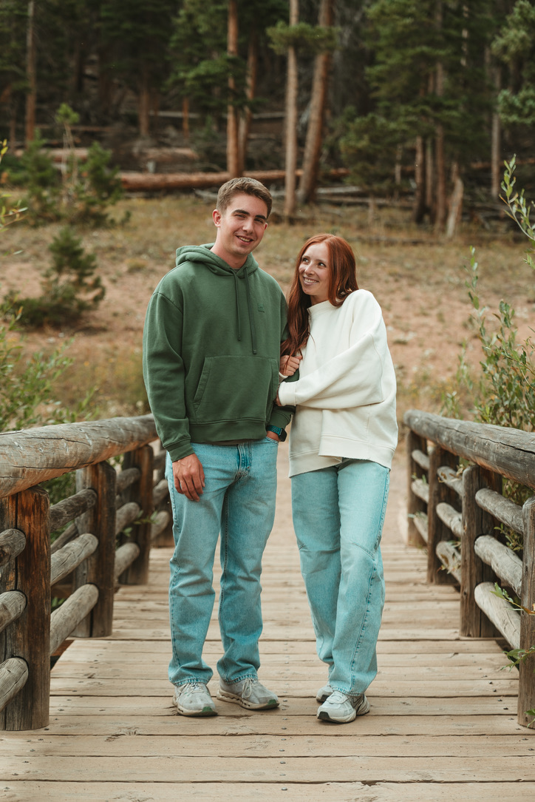

The image above is from garden of the gods in colorado. I visited it earlier this year on a road trip out west. I love visiting colorado and have flown there a few times for a daytrip. I love the food and seeing the beauty and nature that colorado has to offer. Most recently I flew to Colorado with my brother who is a photographer to meet up with my fiance who lives in Arizona to get our engagement pictures taken.
This image is near the outside of Estes park. It was a fun daytrip and the weather was perfect for pictures. On the most recent trip because of having to stop for pictures and only being in Colorado for 12 hours, our time was limited. I made a pretty specific itinerary ahead of time so that we could maximize our time and see some things in between taking photos.
I love visiting Colorado and after graduating I am hoping to either move there or to North Carolina.